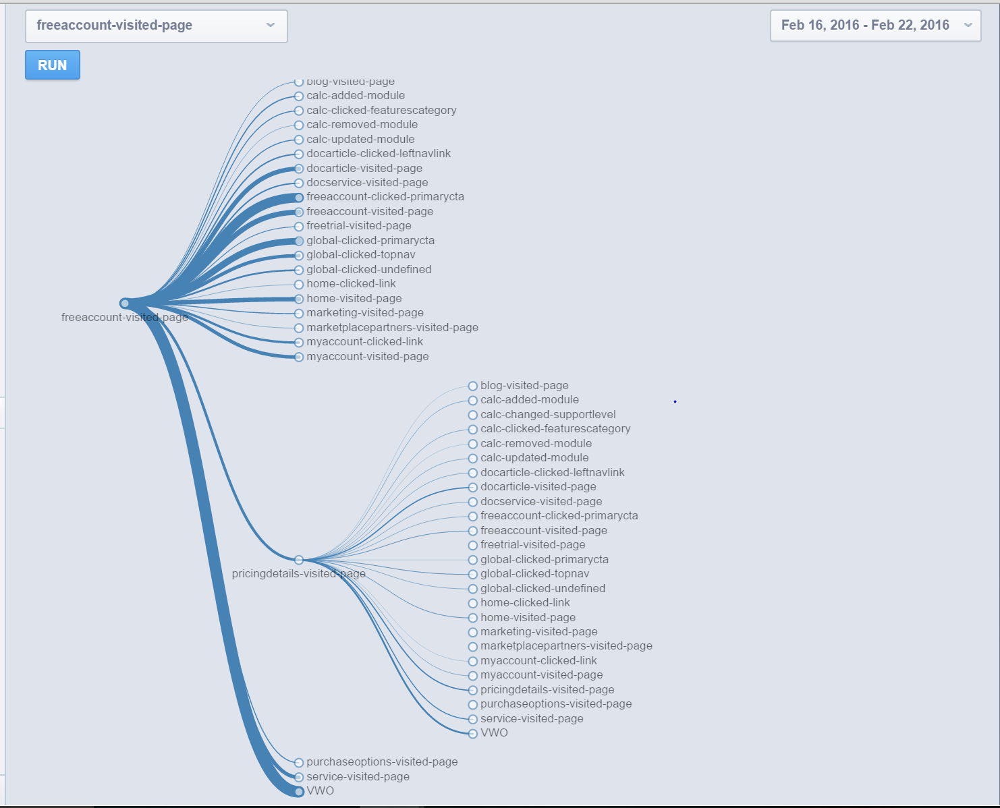

We’ve gathered a few key reports that may be of interest to you. Below you will find the name, description, and link to key Funnel and Flows/Paths Reports (Open all links in a new. Click here for more information on how Funnels are calculated in Mixpanel. Please contact Uday Chakravarthi (udaych@microsoft.com) with any questions.
Funnels:
- Free Account -> Trial Initiation
- This weekly report shows the conversion of visitors who visited the Free Account Page and went on to initiate a free trial by clicking on the Start Now CTA.
- Link to report
- Azure Home Page ->Trial Initiated
- This weekly three step funnel report shows the conversion of visitors who visited the Azure Home Page, then the Free Account Page, and then initiated a free trial by clicking on the Start Now CTA.
- Link to report
- Home Page AB Test
- This homepage AB test report segments funnels by experiment and enables us to look at Homepage AB Test report in Mixpanel. The name of the property used to segment the funnel is the campaign-id of the experiment prefixed with VWO and the values are variation names.
- Link to report
Application Reports
- Funnel with Drop Off
- The Funnel with Drop Off custom report, found in the Applications tab, shows us the common paths users who don’t initiate a Free Trial take
- You must build the funnel yourself; we recommend building a funnel with the following three steps:
- home-visited-page
- freeaccount-visited-page
- freeaccount-clicked-page
- Click on the gray portion of the bar, and see the steps that users take in the flow report below
- Link to report
- Flow
- The Flow report will show you the steps users take after a particular event.
- For example, if we choose ‘freeaccount-visited-page’, we can see what the users did after getting to this Free Account page. By clicking on a specific event in the flow, you can drill down deeper to see the next steps after that event in the flow.
- Link to Report
